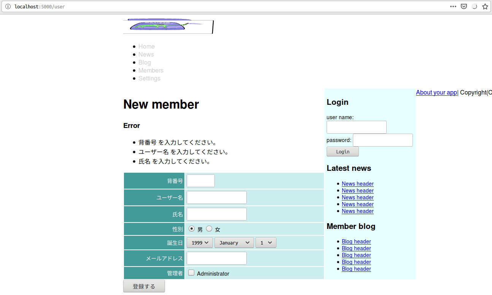

本稿は原著の各章をCommon Lispに翻訳するシリーズの第7章である。 本章ではバリデーションと国際化機能について修めていく。
Cavemanにvalidationの機能などない。 必要なら自作せざるを得ない。 自作に当たっては各種バリデーション用のヘルパーを提供してくれているライブラリratifyが助けとなろう。
ASDファイルに追加しておこう。
:depends-on ("clack"
"lack"
"clack-errors" ; for debug.
"ratify" ; validation.
...)さて、バリデーションの設計であるが、これはサーバサイドのバリデーションである。 本章の例でユーザが自由に入力をできるフォームヶ所は４つである。 複数ヶ所に不正値があった場合、すべて面倒をみたい。 一箇所でも不正であれば全体が不正になるので、開発者としてはその時点でエラーとしたいが、それだとUXが悪くなる。 複数の不正値があるとして、一つしかエラーの指定がない場合、それを修正して送信したあと「後出しで他のエラー指定が出てくる」というのはUXとしては最悪だろう。 不正値に対してはエラーを投げるのではなくリストに積んで返す設計にしたほうがいいだろう。
また、ここでは引数のバリデーションをして、値が正しい場合にのみオブジェクトを作るのではなく、とにかく不正な値であろうとなかろうとお構いなしにオブジェクトをつくり、その後にバリデーション、正規化を行いたい。 とうのも、入力した値が不正だったとして、だからといって入力フォームがすべて空になって一から全部入力し直さなければならなくなるのもまた最悪なUXとなろうからだ。
さて、その実装についてであるが、本当はCL:MAKE-INSTANCEを拡張して行いたかった。
:AROUNDメソッドを定義して、スロットに不正値が入っていたら多値でリストを返すという設計である。
言語仕様上できておかしくないし、事実REPLトップレベルでは機能するものができた。
ところが多値を束縛しようとすると機能しない。
おそらくこれはSBCLのバグだ。
最適化のため、CL:MAKE-INSTANCEは一引数しか返さないというような管理の仕方がされているのではないか？
というわけでここでは理想の振る舞いをヘルパーに担わせてしまおう。
そうすることで将来バグがとれたとき、リファクタリングがしやすくなろうというものだ。
方向性は見えたので、まず下準備としてテーブルの定義を変更する。 :INITFORMの指定がある場合の値は想定されるユーザー入力にしておく。 具体的には整数を期待するスロットに整数を初期値として入れるのではなく、整数と解釈できる文字列を入れておく。 ユーザーの入力はすべて文字列で受け取ることになるからだ。
(defclass user()
((number :col-type :integer
:initarg :number
:accessor number-of)
(name :col-type (:varchar 64)
:initarg :name
:accessor name-of)
(full-name :col-type (or (:varchar 128) :null)
:initarg :full-name
:accessor full-name-of)
(email :col-type (or :null :text)
:initarg :email
:accessor email-of)
(birthday :col-type (or :null :date)
:initarg :birthday
:accessor birthday-of)
(sex :col-type :integer
:initarg :sex
:initform "1" ; <--- This!
:accessor sex-of)
(administrator :col-type :boolean
:initarg :administrator
:initform "1" ; as NIL. ; <--- This!
:accessor administrator-of)
)
(:metaclass mito:dao-table-class))バリデーション関数には不正のチェックのみならず、期待される正しい値だった場合正規化してスロット値を更新する機能も持たせる。 想定されるコードは以下のようなものだ。
(defun validate-user(user)
(let((alist))
(if(slot-boundp c 'number) ; check requred.
(handler-case(let((number(parse-integer(number-of user)))) ; check form.
(setf(number-of user)number) ; canonicalize.
(if #0=(< 0 number 100) ; check range.
(when(mito:find-dao 'user :number number) ; check uniqueness.
(push (cons 'number (format nil "Number must unique, already exists."))alist))
(push (cons 'number (format nil "Number must in range of ~S but ~S"'#0# number)) alist)))
(error(c)(push (cons 'number (princ-to-string c)) alist)))
(push (cons 'number "Number is required.") alist))
(if(slot-boundp c 'name) ; check required.
(let((name(name-of c)))
(if(ppcre:scan #2="^[A-Za-z][A-Za-z0-9]*$" name) ; check form.
(if #1=(<= 2 (length name) 20) ; check range.
(when(mito:select-dao 'user (sxql:where `(:like ,name))(sxql:limit 1)) ; check uniqueness.
(push (cons 'name (format nil "Name must unique, already exists."))alist))
(push (cons 'name (format nil "Name must in range of ~S but ~S" '#1# (length name))) alist))
(push (cons 'name (format nil "Invalid form. Must satisfies ~S" #2#)) alist)))
(push (cons 'name (format nil "Name is required.")) alist))
(if(slot-boundp c 'full-name) ; check required.
(let((full-name(full-name-of c)))
(unless #3=(<= 0 (length full-name) 20) ; check range.
(push (cons 'full-name (format nil "Full name must in range of ~S but ~S" '#3# (length full-name))) alist)))
(push (cons 'full-name "Full name is required.") alist))
(values user (reverse alist))))これはいかにも辛いのでマクロで抽象化したい。
(defmacro with-check-validate((var)(&rest assertions))
;; initialize
(check-type var symbol)
(setf assertions (mapcar (lambda(assert)
(etypecase(car assert)
(symbol (cons (list (car assert)(car assert))(cdr assert)))
((cons (and symbol (not (or keyword boolean)))
(cons (and symbol (not (or keyword boolean)))
null))
(assert(every (lambda(clause)
(keywordp (car clause)))
(cdr assert)))
assert)))
assertions))
(let((alist(gensym"ALIST"))
(slot(gensym "SLOT"))
(name(gensym"NAME")))
;; body
`(LET((,alist))
(dolist(,slot (c2mop:class-slots (class-of ,var)))
(let((,name(c2mop:slot-definition-name ,slot)))
(when(and (slot-boundp ,var ,name)
(equal "" (slot-value ,var ,name)))
(slot-makunbound ,var ,name))))
,@(loop :for ((local-var slot-name) . assertions) :in assertions
:collect (labels((rec(assertions)
(if(endp assertions)
nil
(apply #'body (cdr assertions)(car assertions))))
(body(rest key value &rest format-arguments)
(ecase key
(:type
`(if(typep ,local-var ',value)
,(rec rest)
(push (cons ',slot-name
,(if format-arguments
`(format nil ,@format-arguments)
`(format nil "not type-of ~S"',value)))
,alist)))
(:key
(let((v(gensym"CANONICALIZED"))
(c(gensym"CONDITION")))
`(handler-case(let((,v (funcall ,value ,local-var)))
(setf (slot-value ,var ',slot-name) ,v
,local-var ,v)
,(rec rest))
(error(,c)(push (cons ',slot-name (princ-to-string ,c))
,alist)))))
(:assert
`(if ,value
,(rec rest)
(PUSH (CONS ',slot-name ,(if format-arguments
`(format nil ,@format-arguments)
`(FORMAT NIL "must satisfies ~S but ~S"
',value
,local-var)))
,alist)))
(:unique
`(unless(mito:object-id ,var)
(if(null(mito:select-dao (class-of ,var) (sxql:where ,value)(sxql:limit 1)))
,(rec rest)
(push (cons ',slot-name "already exists"),alist)))))))
(if(equal '(:require t) (car assertions))
`(if(slot-boundp ,var ',slot-name)
(let((,local-var (slot-value ,var ',slot-name)))
,(rec (cdr assertions)))
(push (cons ',slot-name ,"required") ,alist))
(progn (when(equal '(:require nil) (car assertions))
(pop assertions))
`(if(slot-boundp ,var ',slot-name)
(let((,local-var(slot-value ,var ',slot-name)))
,(rec assertions)))))))
(values ,var (reverse ,alist)))))これで先のコードは以下のように書けるようになる。
(defun validate-user(user)
(with-check-validate(user)
((number (:require t)
(:key #'parse-integer)
(:assert (< 0 number 100))
(:unique (:= :number number)))
(name (:require t)
(:type string)
(:assert (ppcre:scan "^[A-Za-z][A-Za-z0-9]*$" name))
(:assert (<= 2 (length name) 20) "length must be (<= 2 x 20)")
(:unique (:like :name name)))
((n full-name) (:require t)
(:type string)
(:assert (<= 1 (length n) 20) "length must be (<= 1 x 20)")))))RETIFY:TEST-EMAILがそれを果たしてくれる。
VALIDATE-USRを以下のように修正。
(defun validate-user(user)
(with-check-validate(user)
((number (:require t)
(:key #'parse-integer)
(:assert (< 0 number 100))
(:unique (:= :number number)))
(name (:require t)
(:type string)
(:assert (ppcre:scan "^[A-Za-z][A-Za-z0-9]*$" name))
(:assert (<= 2 (length name) 20) "length must be (<= 2 x 20)")
(:unique (:like :name name)))
((n full-name) (:require t)
(:type string)
(:assert (<= 1 (length n) 20) "length must be (<= 1 x 20)"))
(email (:key #'ratify:test-email))))) ; <--- This!初期値のあるスロットのチェックも加えて、最終版。
(defun validate-user(user)
(with-check-validate(user)
((number (:require t)
(:key #'parse-integer)
(:assert (< 0 number 100))
(:unique (:= :number number)))
(name (:require t)
(:type string)
(:assert (ppcre:scan "^[A-Za-z][A-Za-z0-9]*$" name))
(:assert (<= 2 (length name) 20) "length must be (<= 2 x 20)")
(:unique (:like :name name)))
((n full-name) (:require t)
(:type string)
(:assert (<= 1 (length n) 20) "length must be (<= 1 x 20)"))
(email (:key #'ratify:test-email))
(birthday (:key #'local-time:parse-timestring))
(sex (:require t)
(:key #'parse-integer)
(:assert (<= 1 sex 2)))
(administrator (:require t)
(:key (lambda(x)(zerop(parse-integer x))))))))エラーメッセージのための部分テンプレートは以下の通り。 templates/shared/errors.htmlに作成する。
{% if errors %}
<div id="errors">
<h3>Error</h3>
<ul>
{% for (slot . message) in errors %}
<li>{{slot}} - {{message}}</li>
{% endfor %}
</ul>
</div>
{% endif %}上記部分テンプレートを以下のような形でtemplates/user/form.htmlの冒頭に追加する。
{% include "shared/errors.html" %}New用のルーティングを修正しなければいけないが、ついでにリファクタリングもしておこう。
REST-API的にはNewアクションはPUTメソッドで実現されるべきだろう。 POSTメソッドは単にディスパッチャとして以下のように修正する。
(defroute("/user" :method :post)(&key method)
(cond
((string= "put" method)
(put-user (lack.request:request-body-parameters ningle:*request*)))
(t `(400 (:content-type "text/plain") (,(format nil "Unknown method ~S"method))))))NewのUIフォームが正しくPUTメソッドを送るように、また、引数を縦棒でくるむのがめんどくさすぎるのでテンプレートを各々修正。 下はその一例。
<input name="AUTHENTICITY-TOKEN" type="hidden" value="{{token}}" />
<input name="METHOD" type="hidden" value="put" />
{% include "user/form.html" %}分割したPUTメソッドは名前付きにして以下のように実装。
引数から縦棒が取り除かれることにより、オブジェクトのinitargとの共通化が行われた結果、引数をまとめてCL:APPLY経由で渡せるようになっている点要注目。
このとき引数に:ALLOW-OTHER-KEYS Tの指定をしておかないとエラーになるので要注意。
(defroute put-user("/user" :method :put)(&rest args
&key authenticity-token birthday-year birthday-month birthday-day
number name full-name email administrator)
(declare(ignore number name full-name email administrator))
(if(not(string= authenticity-token (token)))
`(403 (:content-type "text/plain") "Denied")
(multiple-value-bind(user errors)(your-app.model::validate-user
(apply #'make-instance 'your-app.model::user
:birthday
(format nil "~A-~A-~A" birthday-year birthday-month birthday-day)
:allow-other-keys t
args))
(if errors
`(400 ()(,(render "user/new.html" `(:user ,user :errors ,errors :token,(token)))))
(progn (setf(gethash :notice ningle:*session*)"Stored!")
`(303 (:location ,(format nil "/user/~D"(mito:object-id user)))))))))Editのためのルーティングも同様にリファクタリングしていく。
(defroute("/user/:id" :method :post)(&key id method)
(cond
((string= method "delete")
(delete-user (acons "ID" id (lack.request:request-body-parameters ningle:*request*))))
((find method '("" "post" nil) :test #'equal)
(post-user (acons "id" id (lack.request:request-body-parameters ningle:*request*))))
(t `(400 (:content-type "text/plain") (,(format nil "Unsuppoeted method ~S" method))))))見通しの良さのため、本来のPOSTメソッドとしての処理は個別のPOST-USERとして定義する。
Cavemanが自動的に作る名前付き関数を、代わりに手動で書くことになるが、まぁ、よしとする。
(defun post-user(request)
(destructuring-bind(&key authenticity-token id number name full-name sex birthday-year birthday-month
birthday-day email administrator &allow-other-keys)
(loop :for (key . value) :in request
:collect (let((*package*(find-package :keyword)))
(read-from-string key))
:collect value)
(if(not(string= authenticity-token (token)))
`(403 () ("Denied"))
(let((id(ignore-errors(parse-integer id)))
(user(and id (mito:find-dao 'your-app.model::user :id id))))
(if(null user)
`(500 (:content-type "text/plain") ("Could not edit unexists user."))
(progn (setf (your-app.model::number-of user) number
(your-app.model::name-of user) name
(your-app.model::full-name-of user) full-name
(your-app.model::sex-of user) sex
(your-app.model::birthday-of user) (format nil "~A-~A-~A" birthday-year birthday-month birthday-day)
(your-app.model::email-of user) email
(your-app.model::administrator-of user) administrator)
(multiple-value-bind(user errors)(your-app.model::validate-user user)
(if errors
`(400 ()(,(render "user/edit.html" `(:user ,user :errors ,errors :token,(token)))))
(progn (mito:save-dao user)
(setf(gethash :notice ningle:*session*)"Updated")
`(303 (:location ,(format nil "/user/~D" id))))))))))))
CavemanがテンプレートエンジンにDjulaを使用しているのは既に承知のことだが、Djulaはcl-localeを使用したi18nをサポートしている。 もっとも、「使い方についてはdemoを参照してくれ」としかドキュメントにはなく、肝心のdemoも走らせるとi18nに関してはエラーとなるのだが。 とはいえcl-localeは非常に小さなライブラリなのでコードを追うのもそこまで苦ではない。 使い方を見ていこう。
cl-localeは非常に小さなライブラリなのは既に述べた通りだが、そのままだと少々小さすぎる。 使い勝手が悪いのでユーティリティを自作しておこう。
/src/locale.lispを用意し、your-app.asdの該当箇所を以下のように修正する。
:components ((:module "src"
:components
((:file "main" :depends-on ("config" "view" "db"))
(:file "web" :depends-on ("view" "model"))
(:file "view" :depends-on ("config"))
(:file "db" :depends-on ("config"))
(:file "model" :depends-on ("db"))
(:file "locale" :depends-on ("config")) ; <--- This!
(:file "config"))))/src/locale.lispの先頭はお定まりのものだ。
(defpackage :your-app.locale(:use :cl))
(in-package :your-app.locale)cl-localeの作法に則って、以下のような辞書を定義することになろう。
(cl-locale:define-dictionary your-app
("ja" (merge-pathnames "locale/ja-jp.lisp"
your-app.config:*static-directory*))
("ja-JP" (merge-pathnames "locale/ja-jp.lisp"
your-app.config:*static-directory*)))ところがこのままだと少々使い勝手が悪い。 辞書ファイルは/static/locale/*.lispとして配置していくのだが、開発中はこのファイルのみを編集することも少なくない。 すなわちアプリケーションのコードには変更が施されないこともままあるということだ。 その場合何が起きるかというと、ASDFは賢くもソースコードに変更が無いことを見極め、ファイルのロードを行わない。 すなわち辞書ファイルの変更が反映されない。 ASDFの:COMPONENTには:STATIC-FILEの指定も可能なのだが、たとえこれを指定しても変更が反映されるようなことはない。 :STATIC-FILEはLispイメージ外のものだからだ。
そこで辞書ファイルのリロードを行いたいのだが、そのような機能はcl-localeには無い。 アプリケーションのロードに:FORCE Tを指定すれば再ロードは行われるが、その場合必要のない全体コンパイルが走るのでできれば避けたい。 そこで辞書ファイルのリロードを行うヘルパーがあると便利だ。 という訳でそれを作っていくのだが、それにあたり問題が２つほどある。
一つはcl-localeがアプリケーション志向で言語志向ではないという点だ。 どういう意味かというと、使うためのAPIは公開されているが、拡張するためのAPIは公開されていないという意味だ。 cl-localeは１パッケージパーファイルのスタイルで開発されているので、各下層パッケージからはエクスポートされている場合もあるがインターフェイスとなるパッケージからは公開されていないものが多い。 もちろんいずれにせよインターナルなシンボルもある。 ここでは容赦なくそれらを使っていくこととする。
２つめの問題は定義コードに書くべきパスの管理が煩わしいという点だ。 リロードするヘルパーはリロードすべきファイルパスを知っていなければならない。 ところがcl-localeはこの情報を使い捨てにする。 すなわち、たとえばlocaleオブジェクトのfile-pathスロットに格納しておくというようなことはなく、リテラルなデータとして使用した後はもう動的に取り出すことはできない。
かといってグローバル変数に突っ込んでおくのも使い勝手が悪い。 今後対応言語辞書が増えていくことを想定したら、１変数にリストなりハッシュテーブルなりで管理するのはいかにもバグの源泉になりそうだ。
というわけでここでは同名のマクロを定義しそれを使っていくこととする。 コードは以下の通り。
(defmacro define-dictionary(name &rest args)
`(Progn (cl-locale:define-dictionary ,name ,@args)
(defun reload()
(loop :for (locale dictionary) :in (list ,@(mapcar (lambda(arg)
`(list ,@arg))
args))
:do (cl-locale.core::register-dictionary ',name dictionary :locale locale)))))シンタックスはCL-LOCALE:DEFINE-DICTIONARYと全く同じなので、先例のコードから単にパッケープリフィックスを除けば良い。
cl-localeは作者の好みを反映してCL-LOCALE:CURRENT-DICTIONARYをCL:SETFしていくスタイルとなっている。
僕個人はCL:LETで動的に束縛するほうが好みなので、それを実現したい。
その上で、そのコードは頻出することになろうからWITH系マクロとしてまとめておきたい。
コードは以下の通り。
(defmacro with-i18n((dictionary locale)&body string-generate-form)
`(let((cl-locale.core::*dictionary*(cl-locale.core::ensure-dictionary ',dictionary))
(cl-locale.core:*locale* ,locale))
(cl-locale:i18n (progn ,@string-generate-form))))さて、ロケールをどう切り替えるか、だが、HTTPヘッダのaccept-languageを取得しよう。
NINGLE:*REQUEST*変数から任意の値を取り出してくる最下層関数は以下の通り。
(defun accept-language()
(and ningle:*request*
(gethash "accept-language" (getf (lack.request:request-env ningle:*request*):headers))))取り出されたパラメタをパーズするヘルパーは以下の通り。
(defun parse-accept-language(parameter)
(mapcar #'car (sort (mapcar (lambda(param)
(ppcre:split ";q=" param))
(ppcre:split #\, parameter))
#'>
:key (lambda(x)(read-from-string(or (cadr x) "1"))))))上記ヘルパーは、複数指定されているかもしれない言語を重要度の高い順にリストにくくって返す。 しかしながら指定された言語が辞書としてサポートされていないかもしれない。 それを確認する用の下層関数は以下の通り。
(defun find-locale(locale)
(and cl-locale.core::*dictionary*
(gethash locale cl-locale.core::*dictionary*)))ソート済みのリストから最も重要度の高いサポート済みのロケールを返す関数。
(defun find-acceptable-locale(locales)
(find-if #'find-locale locales))さてこれで下準備は整った。 djula内部マクロを使うことになるが、/src/view.lispのyour-app.djulaパッケージに以下のコードを突っ込む。
(djula::def-filter :i18n(it)
(your-app.locale::with-i18n(your-app.locale::your-app (your-app.locale::find-acceptable-locale
(your-app.locale::parse-accept-language
(your-app.locale::accept-language))))
it))これに合わせてASDファイルの編集をしておくことを忘れぬよう。
:components ((:module "src"
:components
((:file "main" :depends-on ("config" "view" "db"))
(:file "web" :depends-on ("view" "model"))
(:file "view" :depends-on ("config" "locale")) ; <--- This!
(:file "db" :depends-on ("config"))
(:file "model" :depends-on ("db"))
(:file "locale" :depends-on ("config"))
(:file "config"))))本来ならDjulaが提供するi18n機能を使うべきなのだが、肝心のデモが死んでるので上記フィルターを利用することで無理やり実現していく。
使い方だが、テンプレートの中で対応させたいリテラルをDjulaのフィルタータグで包む。 たとえば以下のような形だ。
<th><label for="user-number">{% filter i18n %}Number{% endfilter %}</label></th>辞書ファイルはただのalistだ。
(("Number" . "背番号"))ケースセンシティブな点、要注意。
また、リテラル同士の一対一対応しかできない点も要注意。 よって動的に生成されるエラーメッセージのi18nは、現行不可能である。
templates/user/form.htmlは以下のようになる。
{% include "shared/errors.html" %}
<table class="attr">
<tr>
<th><label for="user-number">{% filter i18n %}Number{% endfilter %}</label></th>
<td><input size="8" type="text" name="NUMBER" value="{{user.number}}" id="user-number" /></td>
</tr>
<tr>
<th><label for="user-name">{% filter i18n %}Name{% endfilter %}</label></th>
<td><input type="text" value="{{user.name}}" name="NAME" id="user-name" /></td>
</tr>
<tr>
<th><label for="user-full-name">{% filter i18n %}Full Name{% endfilter %}</label></th>
<td><input type="text" value="{{user.full-name}}" name="FULL-NAME" id="user-full-name" /></td>
</tr>
<tr>
<th>{% filter i18n %}Sex{% endfilter %}</th>
<td>
<input type="radio" value="1" {%ifequal user.sex 1%}checked="checked"{%endifequal%} name="SEX" id="member-sex-1" />
<label for="member-sex-1">{% filter i18n %}Male{% endfilter %}</label>
<input type="radio" value="2" {%ifequal user.sex 2%}checked="checked"{%endifequal%} name="SEX" id="member-sex-2" />
<label for="member-sex-1">{% filter i18n %}Female{% endfilter %}</label>
</td>
</tr>
<tr>
<th><label for="user-birthday">{% filter i18n %}Birthday{% endfilter %}</label></th>
<td><select id="member-birthday-li" name="BIRTHDAY-YEAR">
{{ user.birthday
| lisp: (lambda(timestamp)
(let((current-year(local-time:timestamp-year(local-time:now))))
(loop :for i :upfrom 1940 :to current-year
:with target = (or (and timestamp
(local-time:timestamp-year timestamp))
(- current-year 20))
:collect (format nil "<option value=\"~D\"~@[ ~A~]>~2:*~D</option>~%"
i (when(= target i)
"selected=\"selected\"")))))
| join:""
| safe
}}
</select>
<select id="member-birthday-2i" name="BIRTHDAY-MONTH">
{{ user.birthday
| lisp: (lambda(timestamp)
(loop :for i :upfrom 1 to 12
:with target = (or (and timestamp
(local-time:timestamp-month timestamp))
1)
:collect (format nil "<option value=\"~D\"~@[ ~A~]>~A</option>~%"
i (when(= target i)
"selected=\"selected\"")
(aref local-time:+month-names+ i))))
| join:""
| safe
}}
</select>
<select id="birthday-3i" name="BIRTHDAY-DAY">
{{ user.birthday
| lisp: (lambda(timestamp)
(loop :for i :upfrom 1 to 31
:with target = (or (and timestamp
(local-time:timestamp-day timestamp))
1)
:collect (format nil "<option value=\"~D\"~@[ ~A~]>~2:*~D</option>~%"
i (when(= target i)
"selected=\"selected\""))))
| join:""
| safe
}}
</select>
</td>
</tr>
<tr>
<th><label for="user-email">{% filter i18n %}Email{% endfilter %}</label></th>
<td><input type="text" name="EMAIL" id="user-email" /></td>
</tr>
<tr>
<th>{% filter i18n %}Administrator{% endfilter %}</th>
<td>
<input name="ADMINISTRATOR" type="hidden" value="0" />
<input type="checkbox" value="1" name="administrator" id="user-administrator" />
</td>
</tr>
</table>templates/shared/errors.htmlは以下のようになる。
{% if errors %}
<div id="errors">
<h3>Error</h3>
<ul>
{% for (slot . message) in errors %}
<li>{{slot|capfirst|lisp: (lambda(s)(substitute #\space #\- s))|i18n}} {{message|i18n}}</li>
{% endfor %}
</ul>
</div>
{% endif %}対応しやすいようにvalidationのエラーメッセージを修正しておく。
(defmacro with-check-validate((var)(&rest assertions))
;; initialize
(check-type var symbol)
(setf assertions (mapcar (lambda(assert)
(etypecase(car assert)
(symbol (cons (list (car assert)(car assert))(cdr assert)))
((cons (and symbol (not (or keyword boolean)))
(cons (and symbol (not (or keyword boolean)))
null))
(assert(every (lambda(clause)
(keywordp (car clause)))
(cdr assert)))
assert)))
assertions))
(let((alist(gensym"ALIST"))
(slot(gensym "SLOT"))
(name(gensym"NAME")))
;; body
`(LET((,alist))
(dolist(,slot (c2mop:class-slots (class-of ,var)))
(let((,name(c2mop:slot-definition-name ,slot)))
(when(and (slot-boundp ,var ,name)
(equal "" (slot-value ,var ,name)))
(slot-makunbound ,var ,name))))
,@(loop :for ((local-var slot-name) . assertions) :in assertions
:collect (labels((rec(assertions)
(if(endp assertions)
nil
(apply #'body (cdr assertions)(car assertions))))
(body(rest key value &rest format-arguments)
(ecase key
(:type
`(if(typep ,local-var ',value)
,(rec rest)
(push (cons ',slot-name
,(if format-arguments
`(format nil ,@format-arguments)
`(format nil "is not type-of ~S"',value)))
,alist)))
(:key
(let((v(gensym"CANONICALIZED"))
(c(gensym"CONDITION")))
`(handler-case(let((,v (funcall ,value ,local-var)))
(setf (slot-value ,var ',slot-name) ,v
,local-var ,v)
,(rec rest))
(error(,c)(push (cons ',slot-name (princ-to-string ,c))
,alist)))))
(:assert
`(if ,value
,(rec rest)
(PUSH (CONS ',slot-name ,(if format-arguments
`(format nil ,@format-arguments)
`(FORMAT NIL "must satisfies ~S but ~S"
',value
,local-var)))
,alist)))
(:unique
`(unless(mito:object-id ,var)
(if(null(mito:select-dao (class-of ,var) (sxql:where ,value)(sxql:limit 1)))
,(rec rest)
(push (cons ',slot-name "is already exists"),alist)))))))
(if(equal '(:require t) (car assertions))
`(if(slot-boundp ,var ',slot-name)
(let((,local-var (slot-value ,var ',slot-name)))
,(rec (cdr assertions)))
(push (cons ',slot-name ,"is required") ,alist))
(progn (when(equal '(:require nil) (car assertions))
(pop assertions))
`(if(slot-boundp ,var ',slot-name)
(let((,local-var(slot-value ,var ',slot-name)))
,(rec assertions)))))))
(values ,var (reverse ,alist)))))辞書ファイルは以下の通り。
(("hello" . "(=ﾟωﾟ)ﾉぃょぅ")
("Number" . "背番号")
("Name" . "ユーザー名")
("Full Name" . "氏名")
("Sex" . "性別")
("Male" . "男")
("Female" . "女")
("Birthday" . "誕生日")
("Email" . "メールアドレス")
("Administrator" . "管理者")
("Create user" . "登録する")
("is required" . "を入力してください。")
)後は必要に応じて各ファイル地道にシコシコと対応していけば良い。

気をつけなければいけないのは、本i18n機能はHTTPヘッダに依存している点だ。 ブラウザのロケールを変更しないと機能しないので、ブラウザのロケールを日本以外にしている人は要注意。